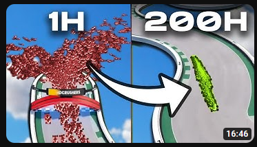

Veille technologiques
Visionnage d'une vidéo de "Underscore_": "On a entraîné une I.A sur Trackmania pendant 200h"
Elle m'a introduit :
- Certaines possibilité de l'IA
- Le concept de Machine Learning basé sur la récompense
- Ce qu'est un LIDAR
- Les "limites" actuelles de cet méthode d'entraînement
Certification d'initiation au concept de l'intelligence artificielle.
Elle m'a introduit :
- Deep Learning
- Machine Learning
- Son potentiel
J'ai alors exploré les possibilité en Python de developper une IA

Elle m'a introduit :
- Sa structure
- Les Librairies à utiliser
Je me suis donc naturellement intéréssé vers le develloppement d'une ia dans une domaine que je connais, les échecs. A travers une vidéo.
Elle m'a introduit :
- La librairie PyGames
- L'algorithme "MINMAX"
Avec la montée en popularité j'ai du me renseigner sur ChatGPT. A travers une vidéo.
Elle m'a appris :
- Ses capacité, notamment de réponse rapide et concises
- la possibilité de créer des images
- la possibilité d'inventer des histoires qui ont du sens
Une vidéo montrant les bases pour créer une IA simple. se basant sur le machine learning A travers une vidéo.
Elle m'a appris :
- Sa complexité de comprehension